A: The Power of Diffusion Models!
Part 0 · Play with the Model using Your Own Text Prompts!
In this part, I create my own text prompts, use the course HuggingFace cluster to generate
4096-dim prompt embeddings (.pth), and then visualize a few generations using different
num_inference_steps. I also fix a random seed that will be reused for all
subsequent parts.
Prompt List & Embeddings
Example Prompt Embedding
Key: a high quality photo
Shape: torch.Size([1, 77, 4096])
Value: tensor([[[-0.0423, -0.0605, 0.0012, ..., -0.0445, -0.0551, 0.0456],
[-0.0925, 0.0050, -0.0171, ..., -0.0464, 0.0248, -0.1573],
[-0.2024, 0.0070, 0.0139, ..., -0.0425, -0.0241, -0.1090],
...,
[ 0.0936, 0.3098, -0.1141, ..., 0.1418, -0.2241, 0.2144],
[ 0.0936, 0.3098, -0.1141, ..., 0.1418, -0.2241, 0.2144],
[ 0.0936, 0.3098, -0.1141, ..., 0.1418, -0.2241, 0.2144]]],
dtype=torch.float16)
Seeds seed = 48
Steps num_inference_steps = 20, 50, 100
Prompt 1: a high quality photo of a corgi riding a skateboard in downtown Tokyo at night


Prompt 2: a hyper-realistic portrait of an astronaut discovering an alien flower


Prompt 3: a watercolor painting of the UC Berkeley campanile during golden hour


Interestingly, the image quality does not improve monotonically with more denoising steps as I thought.
For Prompt 1 (the corgi in downtown Tokyo), I think the the quality of different step images are similar.
For Prompt 2, I think the 100-step sample captures the flower details most clearly. For 20-step,
no idea what is that weird thing.
For Prompt 3 (UC Berkeley Campanile), I think the 50-step output again provides the best balance between structure
and watercolor smoothness, whereas the 25-step version stresses Berkeley
features and resembles a generic clock tower, and the 100-step version stresses 'golden hour'.
Part 1 · Sampling Loops
1.1 Implementing the Forward Process
I implement the forward step using the DDPM formula:
Here, alpha_bar[t] is taken from alphas_cumprod, and
noise ~ N(0,1). This produces a progressively noisier image as
t increases.


1.2 Classical Gaussian Denoising
I then try to denoise these images using Gaussian blur
(torchvision.transforms.functional.gaussian_blur), tuning kernel size and
sigma by hand for each timestep.
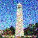
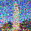
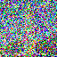
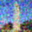
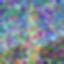
1.3 One-Step Denoising with DeepFloyd
Using the pretrained stage_1.unet conditioned on
"a high quality photo", I estimate the noise and reconstruct the clean image
in a single reverse step for each noisy input. Below I compare the original, the noisy,
and the one-step estimate.


Compared to Gaussian blur, the diffusion model preserves much sharper edges and more realistic textures, especially at higher noise levels where classical filtering severely washes out the structure.
1.4 Iterative Denoising
I construct strided_timesteps from 990 down to 0 with stride 30, call
stage_1.scheduler.set_timesteps, and implement
iterative_denoise(im_noisy, i_start). Starting from the Campanile noised at
timestep[10], I show every 5th denoising step and compare the final estimate
against the one-step denoised and Gaussian result.
Intermediate Iterative Denoising (every 5th step)
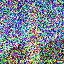
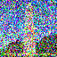
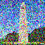
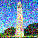
Final Comparison

1.5 Unconditional Sampling from Noise
By setting i_start = 0 and initializing im_noisy with Gaussian
noise, I can generate samples purely from the diffusion prior, conditioned only on
"a high quality photo".
1.6 Classifier-Free Guidance (CFG)
I then implement iterative_denoise_cfg, which runs the UNet twice (conditional
and unconditional) and combines the noise estimates with a guidance scale
w > 1. Below are five samples using CFG with the same text prompt.
With CFG turned on, the images become much more faithful to the text prompt, with stronger semantic structure at the cost of reduced diversity.
During experimentation, I observed that diffusion models tend to generate human portraits even when the prompt does not explicitly specify people. This occurs because phrases like “a high quality photo” introduce strong semantic priors learned from the training data, where high-quality images are disproportionately human-centered.
1.7 · Image-to-Image Translation & Inpainting
Using the SDEdit-style procedure, I start from real (or hand-drawn) images, add noise to a chosen level, and denoise them with CFG to project them back onto the natural image manifold. I then extend this idea to inpainting, where a mask specifies which region is allowed to change.
I apply iterative_denoise_cfg to the Campanile image with different starting
indices i_start ∈ {1, 3, 5, 7, 10, 20}, using the prompt
"a high quality photo".
Campanile

A photo of a bus taken in San Francisco
The little yellow ducks in Victoria Harbour, Hong Kong
1.7.1 · Editing Hand-Drawn and Web Images
I repeat the same SDEdit procedure on one web image and two hand-drawn sketches, again
varying >i_start over the same set of values.
Web picture: A cat with an orange on its head
Hand-Drawn 1
Hand-Drawn 2
I first tried using a general prompt, which does not explicitly specify color or rendering style. As i_start increases, the diffusion process gradually deviates from the original hand-drawn input, but the outputs turn to portrait photo. Then I tried to use low CFG_SCALE, then we can see there is no longer a strong tendency to be a portrait photo, but they preserve a black-and-white or low-saturation appearance. This behavior suggests that, when starting from a hand-drawn grayscale sketch, the model tends to prioritize structural consistency over introducing new color information, especially under generic prompts. Without strong color or style constraints, the diffusion model often defaults to line-dominant or desaturated outputs that are consistent with the input distribution. To encourage colorization, I also experimented with a more descriptive prompt such as “a cute children’s book illustration of a cheerful orange fruit with tiny leaves, drawn in a playful watercolor style,” along with higher CFG scales. While increasing the CFG scale strengthened prompt adherence, the model still showed limited ability to inject rich colors, indicating that color information is harder to introduce when the editing process starts from a predominantly grayscale hand-drawn input.
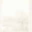
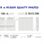
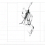
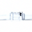
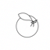

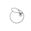
1.7.2 · Inpainting
I implement inpaint by combining the noisy reconstruction with the original
image outside the mask at each diffusion step. Below I show the Campanile inpainting
result and two additional examples on my own images. I used the prompt "a high quality photo"
Campanile Inpainting
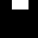
My Own Images 1[Irregular Region]: The sign of an ice cream shop shot at Santa Monica Beach
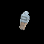
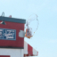
I redrew a small and irregular area. It seems that diffusion wanted to directly restore this area to the color of the sky.
My Own Images 2 [Big Region]: The setting sun blocked by the house
This is the sunset I captured at my residence. Due to the obstruction of the buildings, it didn't look very good. However, to my surprise, diffusion helped me redraw the buildings into mountains.
1.7.3 · Text-Conditional Image-to-Image Translation
Finally, I repeat the SDEdit procedure but change the conditioning prompt to one of my custom prompts from Part 0. The resulting images gradually trade off between preserving the original content and matching the new text. Here are the prompts I used and the results:
Prompt 1: "a tall shimmering silver Christmas tree decorated with glowing white lights, crystal ornaments, and a bright star on top, elegant winter holiday atmosphere"

Prompt 2: "a soft cinematic scene with the calm and wise atmosphere of an elderly white-haired wizard reminiscent of Dumbledore, with gentle magical lighting and a warm enchanted glow"
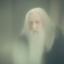
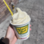
Prompt 3: "a serene Icelandic seascape at dusk with a small boat crossing the dark Arctic waters beneath a vivid aurora borealis, cold atmospheric lighting"
Part 1.8 · Visual Anagrams
I implement visual_anagrams, which denoises an image using two different
prompts in opposite orientations, averages the noise estimates, and creates a single image
that looks like one concept upright and another concept when flipped upside down.
Implementation
At each denoising step, I:
- Run UNet on
y_twith prompt A to get noise estimateε_A. - Run UNet on
flip(y_t)with prompt B to getε_B, then flip it back. - Average the two estimates to obtain
ε = (ε_A + flip⁻¹(ε_B)) / 2. - Use
εin the DDPM reverse step.
Part 1.9 · Hybrid Images via Factorized Diffusion
I follow the Factorized Diffusion idea to create hybrid images: I denoise with two different prompts, then combine low frequencies from one noise estimate with high frequencies of the other (using Gaussian blur and a residual).
Hybrid Construction
For prompts A and B, I compute noise estimates ε_A and ε_B.
Then:
low_A = gaussian_blur(ε_A, ksize=33, sigma=2)high_B = ε_B - gaussian_blur(ε_B, ksize=33, sigma=2)ε_hybrid = low_A + high_B
I plug ε_hybrid into the reverse diffusion update to obtain a single hybrid image.
B: Flow Matching from Scratch!
Part 1: Training a Single-Step Denoising UNet
I first implement an unconditional UNet and train it as a single-step denoiser on MNIST. Given a noisy image \(x = x_0 + \sigma \varepsilon\) with Gaussian noise level \(\sigma\), the model learns a mapping \(f_\theta(x) \approx x_0\) by minimizing an L2 reconstruction loss.
1.1 Implementing the UNet
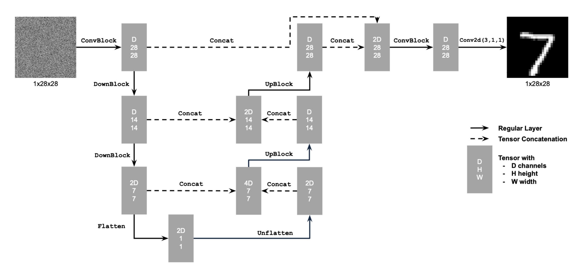
1.2 Noising Process Visualization
For a fixed clean digit \(x_0\) I add Gaussian noise with different standard deviations \(\sigma \in \{0, 0.2, 0.4, 0.6, 0.8, 1.0\}\) and visualize how the digit gradually degrades into noise.
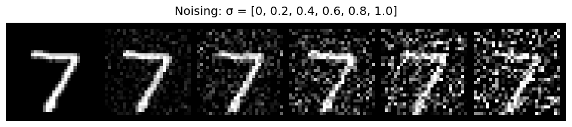
1.2.1 Training the Denoiser
I train the UNet with hidden dimension \(D = 128\) on the MNIST training set for 5 epochs. I use batch size 256, Adam optimizer with learning rate \(1\times 10^{-4}\), and resample a random \(\sigma\) for each batch so the network sees different noisy versions of the same digits across epochs.
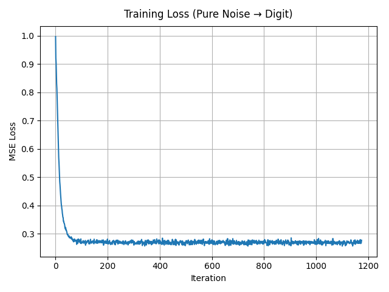
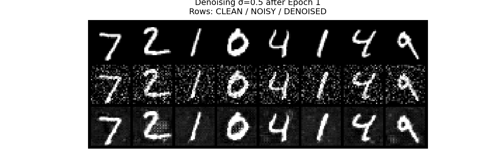
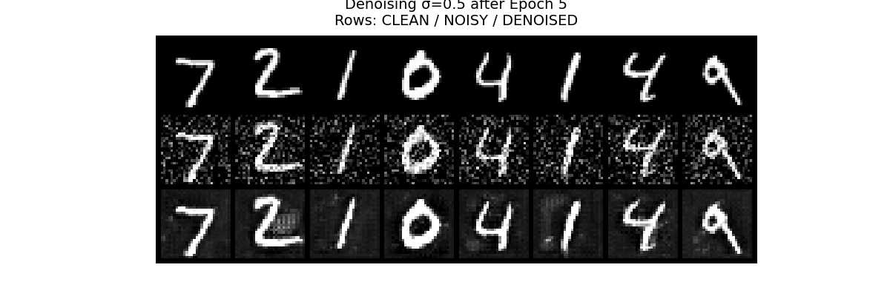
1.2.2 Out-of-Distribution Noise Levels
The denoiser is trained on \(\sigma = 0.5\). I now test it on digits corrupted by out-of-distribution noise levels, keeping the underlying digit fixed and varying \(\sigma\).
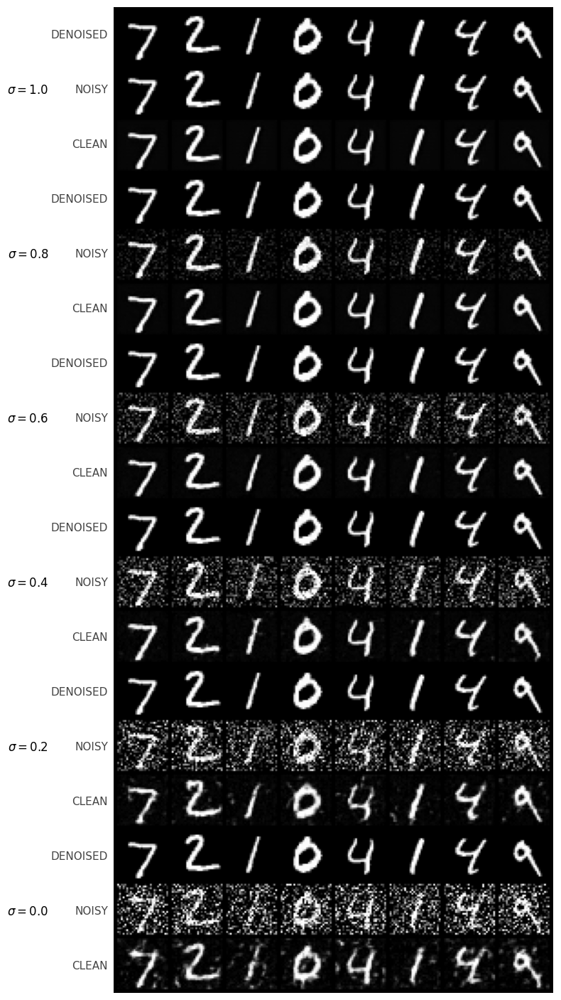
1.2.3 Denoising Pure Noise
I repeat the training procedure but now feed pure Gaussian noise \(x \sim \mathcal{N}(0, I)\) as input and still ask the UNet to predict a clean digit. The model converges to mapping random noise to blurry, digit-like blobs that resemble “average” shapes over the dataset.
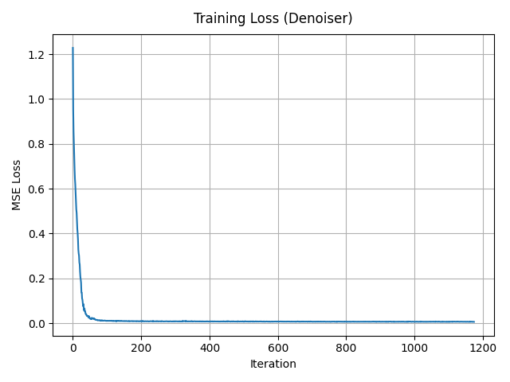
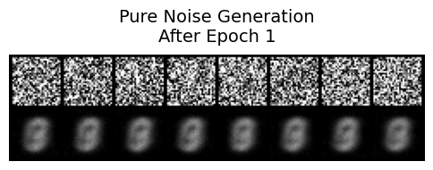
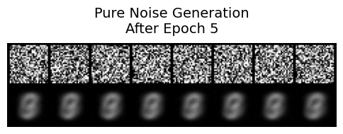
Pure-noise denoising behavior. When the UNet is trained to map pure Gaussian noise directly to clean MNIST digits,
the generated samples quickly converge to a few blurry,
prototype-like digit shapes rather than diverse, sharp digits.
Many outputs look very similar to each other and often resemble an “average” digit rather than a specific example from the dataset.
Why?
This happens because, under an MSE loss, the network is effectively learning the conditional expectation of the training images given noise.
Since the input is just random noise with no meaningful structure,
the model learns to largely ignore the noise and regress toward the global centroid (or a small set of centroids) of the MNIST training distribution,
leading to low-diversity, smoothed digit templates instead of varied realistic samples.
Part 2: Training a Flow Matching Model
In the second part I switch to flow matching. Instead of directly predicting a clean image, a time-conditioned UNet \(f_\theta(x_t, t)\) predicts the velocity field that transports a noisy sample from Gaussian noise towards the MNIST data manifold.
2.1 Time-Conditioned UNet
I inject a scalar time \(t \in [0,1]\) into the UNet via two FCBlocks, which modulate the bottleneck feature (“unflatten”) and the first upsampling block (“up1”). The hidden dimension is set to \(D = 64\). The time scalar is normalized to [0, 1] before being embedded.
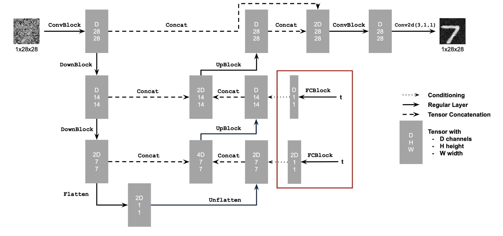
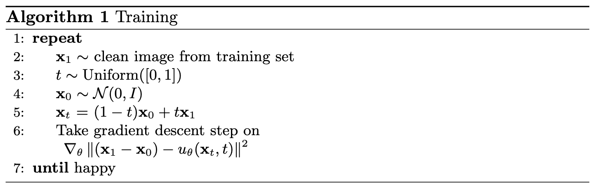

2.2 Training the Time-Conditioned UNet
For each step, I sample a training image \(x_1\), a time \(t \sim \mathcal{U}(0, 1)\), construct an interpolated sample \(x_t = (1 - t) x_0 + t x_1\), and compute the target flow \(v_t(x_t) = x_1 - x_0\). The UNet is trained to minimize \(\|f_\theta(x_t, t) - v_t(x_t)\|^2\) with Adam (lr \(= 1 \times 10^{-4}\)) and an exponential LR scheduler with \(\gamma = 0.1\).
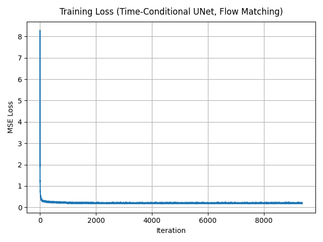
2.3 Sampling from the Time-Conditioned UNet
To sample, I start from pure noise \(x_{t=0} \sim \mathcal{N}(0, I)\) and integrate the learned vector field forward in time using a fixed grid of timesteps. After 1, 5, and 10 epochs, recognizable digits gradually emerge.
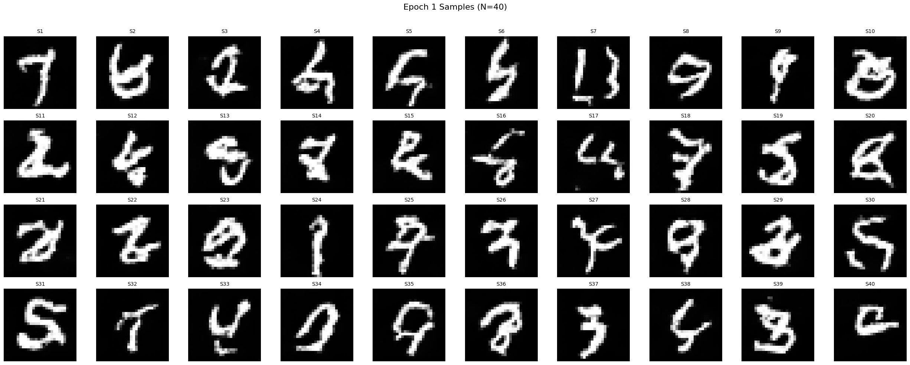
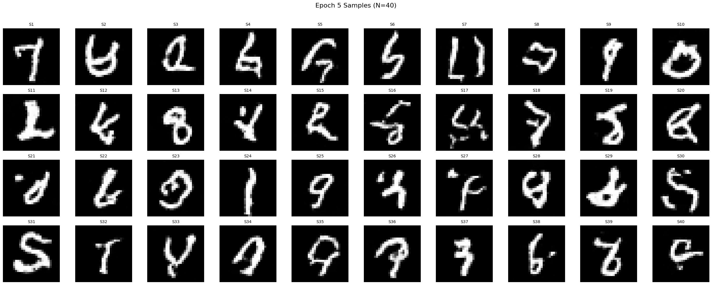
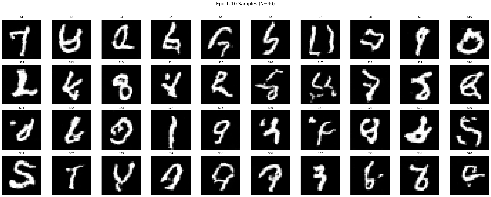
Part 2: Class-Conditioned Flow Matching
To improve sample quality and gain control over which digit is generated, I extend the UNet with class conditioning. A one-hot vector \(\mathbf{c} \in \mathbb{R}^{10}\) encodes the digit label and modulates the same layers as the time embedding via additional FCBlocks. Classifier-free guidance is implemented by randomly dropping the class vector 10% of the time during training.
2.4 Adding Class-Conditioning to UNet
Training follows the same flow-matching objective as before, but now the UNet also receives the class embedding. I keep the same optimizer and learning-rate schedule as for the time-only model.
2.5 Training the UNet
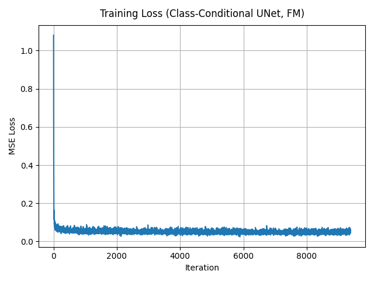
2.6 Class-Conditioned Sampling
During sampling I use classifier-free guidance with a guidance scale \(\gamma\). For each digit \(y \in \{0, \dots, 9\}\) I generate four independent samples. Compared to the time-only model, digits are sharper and modes are better separated.
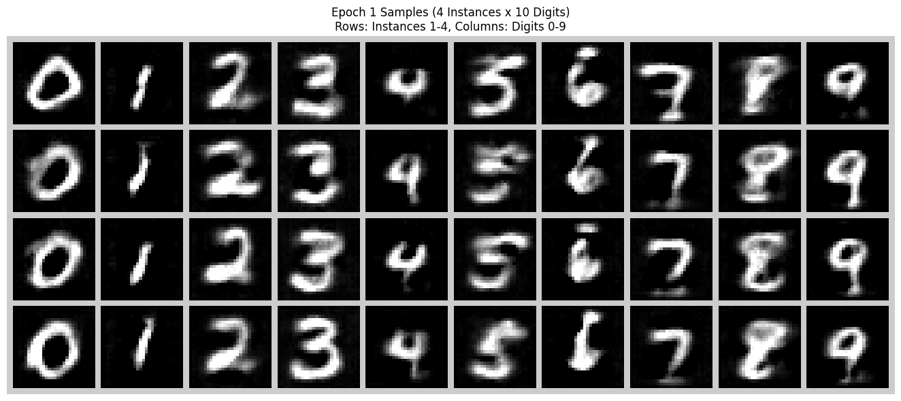
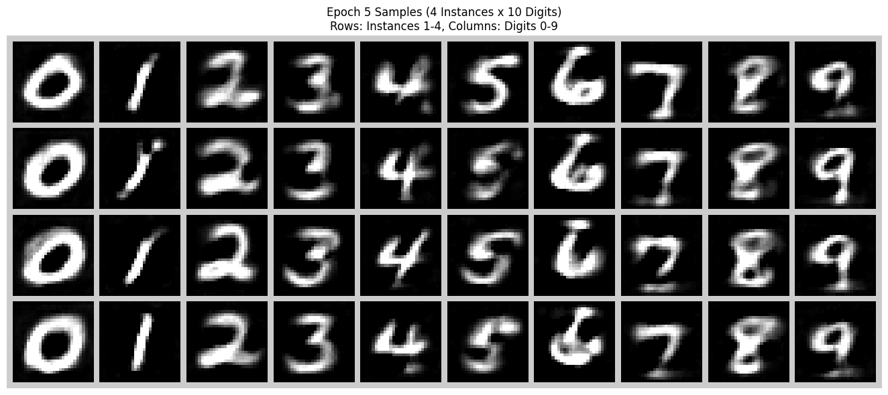
Learning Rate Scheduler Ablation
I also trained the class-conditioned model without the exponential learning rate scheduler. To compensate, I reduced the initial learning rate to \(1 \times 10^{-3}\) and trained for more epochs. This keeps the optimization stable while still allowing the model to converge. The final samples are slightly blurrier but qualitatively similar to the version with the scheduler.
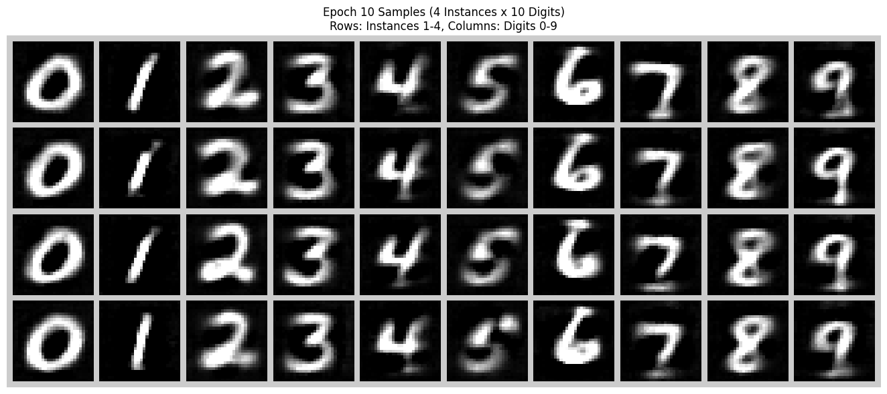
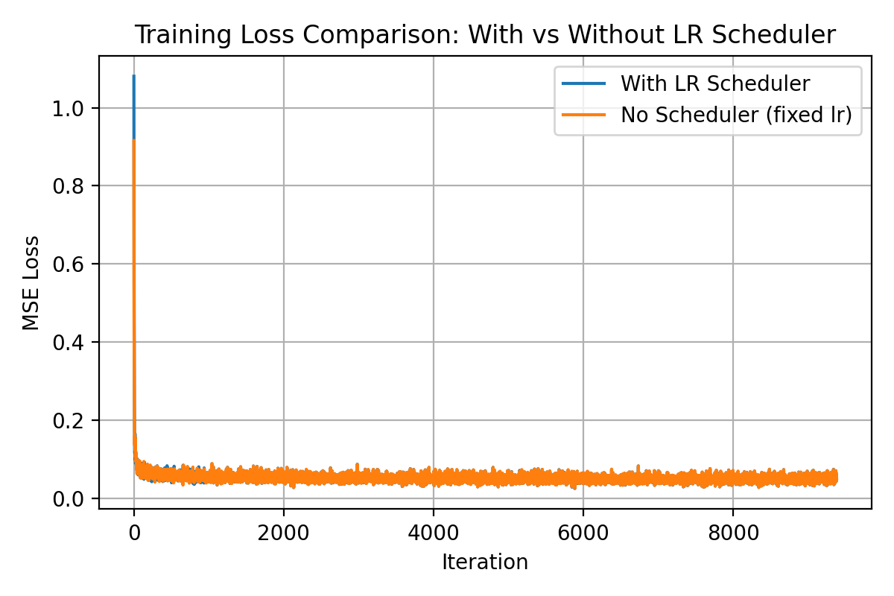